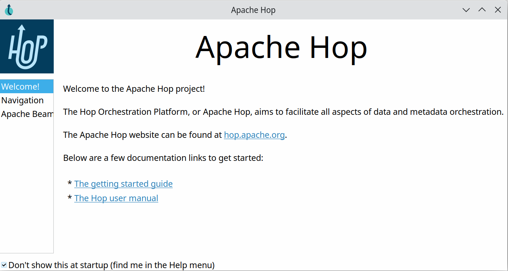
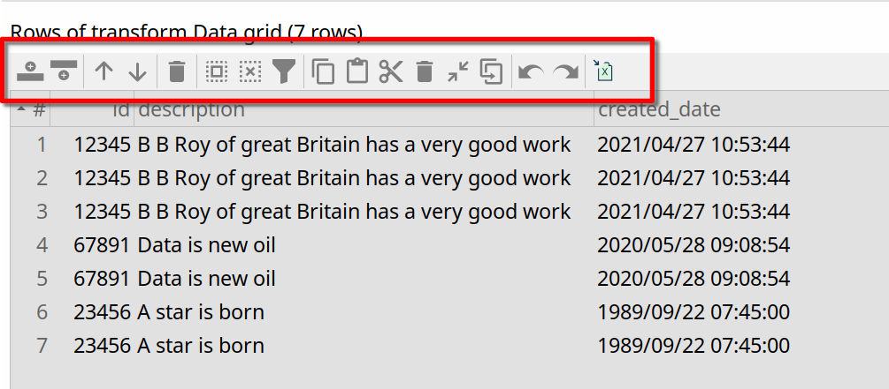
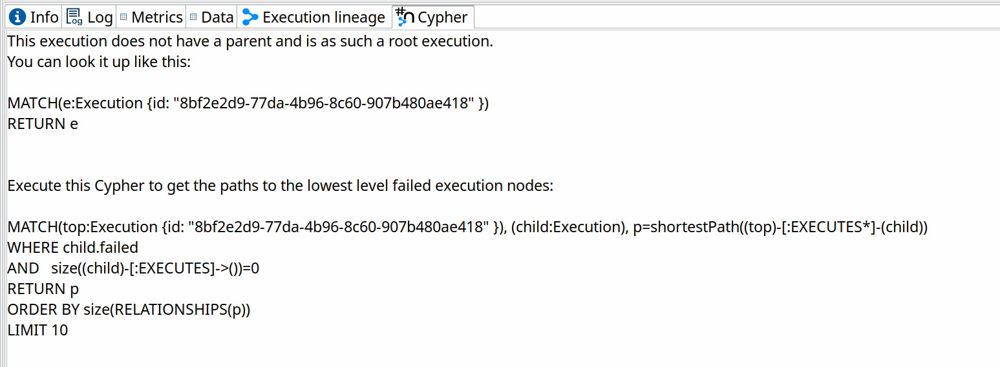

After almost two months of work on over 160 tickets, the Apache Hop community is pleased to announce the general availability of Apache Hop 2.2.0.
A huge thank you to everyone who made this possible.

or download Hop 2.2.0 right away.
Hop GUI improvements
Hop GUI continues to improve with every release. These are evolutions rather than revolutions, but Apache Hop 2.2.0 comes with a lot of evolution in Hop GUI.
Welcome Dialog
New Apache Hop users may not know exactly where to start right away. A new welcome dialog (HOP-4448) in Hop GUI helps new users to get started quickly with links to documentation and samples.
This welcome dialog not only introduces a new link plugin type but also allows any plugin in the Hop platform to add their own information to the welcome dialog.

For example, take a closer look at the Apache Beam tab, that takes you directly to useful documentation links and switches to the Beam pipelines in the samples project.

A new navigation viewport
One of Apache Hop’s best practices is to keep the size of your pipelines and workflows within reason.
However, sometimes your business logic requires more screen real estate than what fits in a single screen.
Navigating pipelines and workflows with the horizontal and vertical scroll bars has always been a bit of a painful experience and was hard to get right on the variety of platforms Hop GUI and Hop Web need to support.
The viewport (HOP-4527) in Hop 2.2.0 brings a new way of navigating your pipelines and workflows in Hop GUI and Hop Web: simply drag around in the viewport to move your pipeline up, down, left or right.
Additionally, zooming in and out has been improved, with cleaned up and more consistent scrollwheel zooming and CTRL-+/= and CTRL-- to zoom in and out, and CTRL-0 to return to 100% zoom.

New data grid toolbars instead of right-click menu
When developing or debugging pipelines, Hop users often work with data grids or tables, for example to preview data.
A lot of the operations in these grids require operations like cutting, copying and pasting rows, moving rows up or down in a selection and more.
The way to perform these actions until Hop 2.1.0 was through the right-click menu on these grids. This isn’t always ideal, especially in a Hop Web context.
Hop 2.2.0 introduces a new data grid toolbar (HOP-4585 Create toolbar on top of TableView widget HOP-4585) to allow all these operation at the click of a button.
Also notice the last option in the toolbar: it is now possible to export the contents of a grid to Excel (HOP-4593).
| Tip | For easy editing of large or advanced data grid, you can copy/paste data grids between Apache Hop and Excel or other spreadsheet platforms in both directions. |

Configuration perspective
The number of plugins that is added to Apache Hop increases with every release.
A lot of these plugins require or allow configuration. To avoid littering Hop GUI with configuration options all over the place, Apache Hop 2.2.0 introduces a new configuration perpsective (HOP-4213). Plugin developers can add their configuration options to this perspective

Hop Web
Hop Web has been available since the very early Apache Hop releases, but has come a long way since then.
Hop Web now is a stable and usable alternative to Hop GUI on the desktop.
Hop Web in Apache Hop 2.2.0 comes with numerous improvements: the number of full or partial ui refreshes has decreased significantly, only SVG images are used now, the file menu has been replaced with a more web-native hamburger menu (behind the Apache Hop logo) and many other tweaks and fixes.
Check the "Getting Hop Web" docs to take Hop Web for a spin.
Various component upgrades
Every Hop release comes with lots of component upgrades, Apache Hop 2.2.0 is no exception.
In addition to lots of smaller updates, Hop 2.2.0 contains upgrades for
-
Apache Beam 2.43 is the latest Apache Beam release, with support for Apache Spark 3.3.0, Apache Flink 1.15.2 and the latest Google Dataflow.
-
Apache Cassandra 4 is Cassandra’s latest major release. Cassandra 4 brings Java 11 support, virtual tables, audit and full query logging, messaging, streaming and transient replication.
-
Neo4j 5 comes with increased performance, sharding, autonomous clustering and agile operations.
Apache Beam and Google Dataflow
After lengthy discussions on e.g. the Apache Hop mailing lists, the Google Dataflow run configuration now supports passing specific options to Google Dataflow jobs.
Apache Hop pipelines can be scheduled and triggered in various ways. New in Apache Hop 2.2.0 is the ability to schedule with Dataflow templates through Flex templates.
Check the docs for more detailed information on how to configure your own Dataflow templates.
If you’re working in a Beam pipeline, Hop GUI now lets you jump directly to the Google Dataflow console to follow up the execution for that pipeline.

A number of smaller but noteworthy improvements in the Apache Beam integration:
-
The Apache Beam API now is a first-class citizen in Apache Hop. Even though this is not immediately visible, it means other transform plugins can now depend on it.
-
as the number of available Beam integration tests grows, we’ve updated the "supported engines" section in the transform docs for transforms that reliably pass the Apache Beam integration tests (HOP-4634).
-
the Simple Mapping transforms now works in Apache Beam pipelines (HOP-4442)
Various
HOP-4556: The execution information perspective now shows the execution lineage and Cypher tabs for Neo4j execution logging, similar to the initial Neo4j logging perspective.
HOP-4285 Clean up XML serialization: the Apache Hop code base is moving towards a code base that is decoupled from the serialization format. This involves cleaning up the code base to replace dependencies on the XML format for pipelines and workflows with.
HOP-4597 Language choice improvements in Chinese environment
HOP-4627 Allow comma separated options in hop-conf --project-variable.

Community
The Hop community continues to grow!
The Apache Hop PMC and community welcomed one new committer since the 2.1.0 release.
The overview below shows the community growth compared to the 2.0.0 release in June:

Without community interaction and contribution, Hop is just a coding club! Please feel free to join, participate in the discussion, test, file bug tickets on the software or documentation, … Contributing is a lot more than writing code.
Check out our contribution guides and Code of Conduct to find out more.
JIRA
Apache Hop 2.2.0 contains work on 163 tickets:
-
Resolved: 158
-
Closed: 5
2.2.0 is the latest release where tickets are managed in JIRA. Development has switched to Github Issues. All development and bug fixes will continue there.
Check the Hop Jira for a full overview of all tickets.